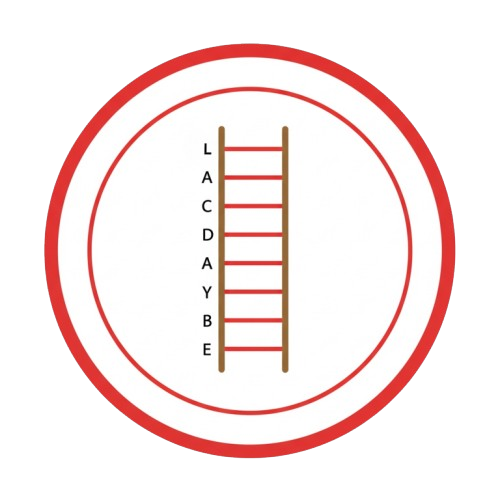

What to Do

Transform the word “CAT” into “DOG” by changing one letter at a time, with each step being a valid word. Take 1-2 minutes to work it out, then write the sequence below or say it aloud. If you’re stuck, try words that differ by one letter (e.g., “COT”). An example solution is: CAT → COT → DOT → DOG (not visible in final design).
My Word Ladder:
1. CAT
2. ___________________________
3. ___________________________
4. DOG
Brain Boost
This game enhances verbal reasoning and creative thinking by building word ladders. It also boosts vocabulary and mental flexibility!